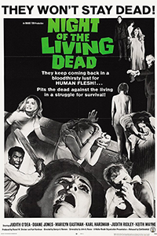
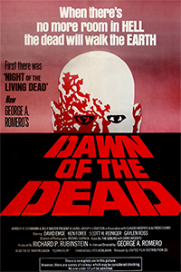
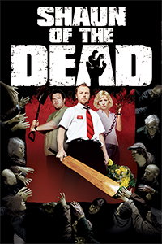
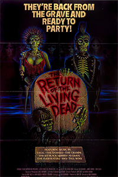
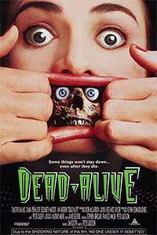
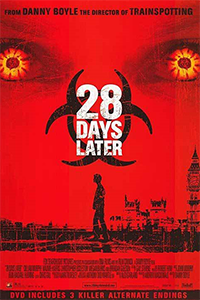
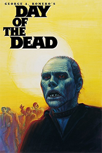

| Movie | Release Year | Synopsis | Director | Zombie Speed | Rotten Tomato Rating |
|---|---|---|---|---|---|
| Night of the Living Dead  |
1968 | A group of individuals take refuge in an abandoned house when corpses rise from the grave in search of fresh human bodies to devour. As the reanimated bodies surround the house, the survivors begin to panic. Eventually the zombies start to find ways inside as the living humans become the prey of the deceased ones. | George Romero | Slow | 97% |
| Dawn of the Dead  |
1978 | As hordes of zombies sweep over the U.S., people try everything in their
power to escape the attack of the undead. A group of survivors retreats
to the sanctuary of a shopping center in an attempt to survive.
This movie received a reboot in 2004 |
George Romero | Slow | 94% |
| Shaun of the Dead  |
2004 | Shaun is a 30-something loser with a dull, easy existence. When he's not working at an electronics store, he lives with his best friend, Ed. When the town is overrun with zombies, Shaun must rise to the occasion and protect both his on and off again girlfriend Liz and his mother. | Edgar Wright | Slow | 92% |
| Return of the Living Dead  |
1985 | When foreman Frank shows new employee Freddy a secret military experiment in a supply warehouse, the two accidentally release a gas that reanimates corpses into flesh-eating zombies. As the epidemic spreads and the creatures satisfy their hunger in gory and outlandish ways, Frank and Freddy fight to survive with the help of their boss and a mortician. | Dan O'Bannon | Slow | 91% |
| Dead Alive  |
1992 | Overprotective mother Vera Cosgrove spying on her grown son, Lionel,
as he visits the zoo with a date, is accidentally bitten by the fearsome
Sumatran rat-monkey. When the bite turns his beloved mother into a zombie,
Lionel tries to keep her locked safely in the basement, but her repeated
escapes turn most of the neighbors into the walking dead, who then crash
a high-society party. Braindead - New Zealand release title | Peter Jackson | Slow | 88% |
| 28 Days Later  |
2002 | A group of misguided animal rights activists free a caged chimp infected with the "Rage" virus from a medical research lab. When a London bike courier wakes up from a coma a month after, he finds his city all but deserted. On the run from the zombie-like victims of the Rage, he comes across a group of survivors, and joins them on a perilous journey to what he hopes will be safety. | Danny Boyle | Fast | 87% |
| Day of the Dead  |
1985 | In the continuation of the Romero series, the living dead regroup above while humans sweat it out below in a Florida missile silo trying to survive. | George Romero | Slow | 83% |